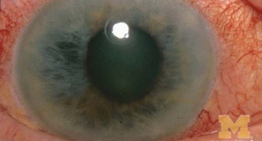

Early detection and long-term treatment for glaucoma, the “silent thief of sight”. We check your eye pressure and optic nerve and keep your vision safe.

High eye pressure Can slowly damage the optic nerveGlaucoma is a group of eye conditions that damage the optic nerve, the cable that carries images from the eye to the brain.
It is usually linked to raised pressure inside the eye. Over time the pressure harms the nerve fibres, and side (peripheral) vision is lost first, so many people do not notice anything until the damage is advanced.
Vision lost to glaucoma cannot be brought back, but with early diagnosis and regular treatment most people keep useful sight for life.
At a glance
The most common type causes no pain and no early symptoms. Signs that may appear include:
Bumping into things or missing objects at the edges.
Gaps in vision that slowly grow larger.
In later stages, only the centre of vision remains.
Sudden pain with a red eye can mean an emergency attack.
Coloured rings around lamps, especially at night.
With blurred vision, this needs urgent care.
Treatment starts as soon as glaucoma is diagnosed, or when your eye pressure is high enough to put the optic nerve at risk. The aim is to lower the pressure and stop further damage.
A sudden painful red eye with blurred vision is an emergency. Please come to the centre or the nearest emergency department straight away.
You should have a glaucoma check if you
 Consultant Ophthalmologist
Dr. Waleed Bunami
Meet the team
Consultant Ophthalmologist
Dr. Waleed Bunami
Meet the team
Eye pressure, optic nerve check and visual field testing at one visit.
The right eye drops for your pressure target, with clear instructions.
Green laser and YAG laser options to improve fluid drainage.
Glaucoma surgery when drops and laser are not enough.
A quick, painless measurement of the pressure inside your eye.
We examine the nerve and map your side vision to see any damage.
Usually daily eye drops; some people need laser or surgery.
Check-ups every few months keep your pressure on target.
Get used to your eye drops and their timing. Report any irritation.
We check that the pressure has dropped to your target.
Pressure checks and repeat tests to make sure nothing has changed.
Glaucoma is controlled, not cured, so ongoing care protects your sight.
Do
Avoid
Glaucoma cannot be cured, and lost vision cannot be restored. But treatment can stop or slow further damage, so most people keep good vision.
Many people do. Some patients can reduce or stop drops after laser or surgery, but regular check-ups are still needed.
Not always. Some people have glaucoma with normal pressure, which is why the optic nerve is also examined.
It often runs in families. If a close relative has glaucoma, your own risk is higher, so regular checks are important.
No. It takes a few seconds and is usually done after numbing drops or with a gentle puff of air.
Book a glaucoma assessment. A short, painless check can find glaucoma early, before it affects your vision.
Sunday to Friday · 9 am – 1 pm, 4 pm – 9 pm